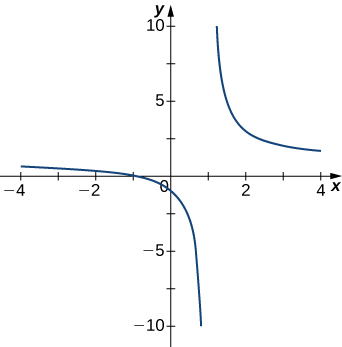
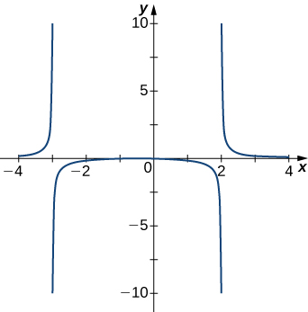
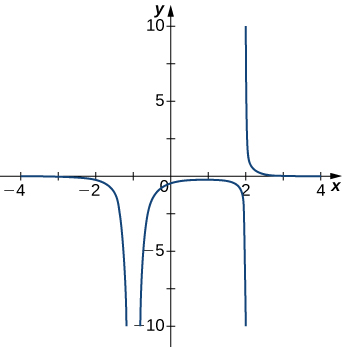
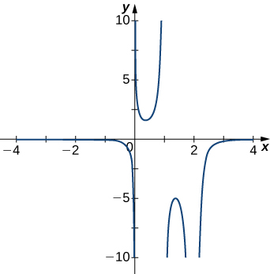
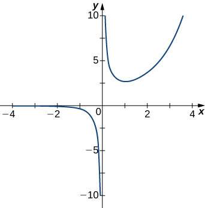

Quiz: Midterm
អនុគមន៍ជាប់៖
I. ចូរកំណត់ថាតើអនុគមន៍នីមួយៗ ជាអនុគមន៍ជាប់? ប្រសិនបើអនុគមន៍ណាមិនជាប់ ចូរកំណត់រកតម្លៃ $x$ រួចកំណត់ប្រភេទដាច់នីមួយៗ៖ infinite ឬ removable ?
II. គេអោយអនុគមន៍ $$ f(x)= \begin{cases}\dfrac{x^2-4}{x-2} & \text { if } x \neq 2 \\ K & \text { if } x=2\end{cases} $$
- ចូរកំណត់តម្លៃ $K$ ដើម្បីធ្វើអោយអនុគមន៍ $f$ ជាប់។
- ចូរកំណត់ប្រភេទដាច់របស់អនុគមន៍ បើ $K=0$ ។
III. Continuity of a function on a region (Topic 5.3, page 9):
- គេឱ្យអនុគមន៍កំណត់តាមផ្នែក៖ \[ f(x) = \begin{cases} \dfrac{\sin x}{x} & \text{if } x \neq 0, \\ 1 & \text{if } x = 0. \end{cases} \] ចូរកំណត់ថាតើ \( f(x) \) ជាប់លើចន្លោះ \( [-2, 2] \)?
- យក \( f(x) = \dfrac{1}{x-4} \) ។ តើ \( f\) ជាប់លើតំបន់ \( [0, 4) \) ឬទេ? Justify your answer.
- គេឱ្យអនុគមន៍ \[ f(x) = \begin{cases} x^2 + 1 & \text{if } x \leq 2, \\ 5 - x & \text{if } x \gt 2. \end{cases} \] Check whether \( f(x) \) is continuous on the interval \( [1, 3] \). If not, identify the point(s) of discontinuity.
IV.
គេអោយអនុគមន៍ $f$ ដូចក្នុងរូបខាងក្រោម តើអំណះអំណាងមួយណាត្រឹមត្រូវ៖
- $f$ has a removable discontinuity at $x=-4$.
- $f$ has a removable discontinuity at $x=0$.
- $f$ has a jump discontinuity at $x=0$.
- $f$ has an infinite discontinuity at $x=4$.
V. Limits pass through continuous functions (Topic 5.3, page 14). Compute \[ \lim_{x \to a} f(g(x)) = f\left( \lim_{x \to a} g(x) \right) \]
- Let \( f(x) = \sin x \) (which is continuous everywhere) and \( g(x) = \dfrac{\pi x}{2} \), \(x \to 1\) .
- Given \( f(x) = e^x \) (continuous everywhere) and \( g(x) = \dfrac{x^2 - 1}{x - 1} \), $x \to 1$.
- Let \( f(x) = \sqrt{x} \) (continuous for \( x \geq 0 \)) and \( g(x) = x^2 + 4 \), $x\to -2$ .
- Consider \( f(x) = \ln x \) (continuous for \( x \gt 0 \)) and \( g(x) = \frac{x - 1}{x^2 - 1} \) (for \( x \neq 1 \)), $x \to 1$
- Let \( f(x) = \dfrac{1}{x} \) (continuous for \( x \neq 0 \)) and \( g(x) = \dfrac{\sin x}{x} \). Evaluate: \[ \lim_{x \to 0} f(g(x)) = f\left( \lim_{x \to 0} g(x) \right) \] Does the limit exist?
អាស៊ីមតូត
VI. ពិនិត្យក្រាហ្វខាងក្រោម រួចកំណត់រកអាស៊ីមតូតឈរ ?
(a)  (b) (c)  (d) 
 (e)
VII. Find the horizontal and vertical asymptotes.
\[ \begin{array}{ll ll } (1) & f(x)=x-\dfrac{9}{x} & \qquad \qquad (2) & f(x)=\dfrac{1}{1-x^2}\\ (3) & f(x)=\dfrac{x^3}{4-x^2} & \qquad \qquad (4) & f(x)=\dfrac{x^2+3}{x^2+1} \\ (5) & f(x)=\sin (x) \sin (2 x) & \qquad \qquad (6) & f(x)=\dfrac{x \sin (x)}{x^2-1} \end{array} \]ម៉ូដែលគណិតវិទ្យា
VIII. វិស្វករកុំព្យូទ័រម្នាក់ បានព្យាករណ៍ថា ចំនួនអតិថិជនចូលទៅប្រើក្រុមហ៊ុនសេវាអ៊ិនធឺរណែត geton.com ដែលកើនក្នុងទម្រង់អ៊ិចស្ប៉ូណង់ស្យែល ក្នុងរយៈពេល 5 ឆ្នាំដំបូង ។ ដោយសន្មតថា គាត់និយាយត្រូវ ។ ប្រសិនបើក្រុមហ៊ុន geton.com មានអតិថិជន 100,000 នាក់ បន្ទាប់ពីរយៈពេល 6 ខែ និង 755 000 នាក់ បន្ទាប់ពីរយៈពេល 12 ខែ តើមានអតិថិជនចំនួនប៉ុន្មាននាក់ ដែលនឹងចូលប្រើសេវានេះ នៅបន្ទាប់ពីរយៈពេល 5 ឆ្នាំ?